[竹北] Yama Sweets
| 餐廳名稱: | Yama Sweets |
|---|---|
| 地 址: | 新竹縣竹北市十興路一段231號 |
| 營業時間: | 週四~週二 07:00~19:00 |
| 週三公休 | |
| 電 話: | 03 668 5090 |
因為團購券，知道了這家店 - Yama Sweets， 算是Coffee Shop 跟烘焙房的合體。因為 7:00 就開始營業，所以可以當早餐吃。 地點算是竹北莊敬北路靠近新埔的那一頭，稍微偏僻，可是也就好停車。 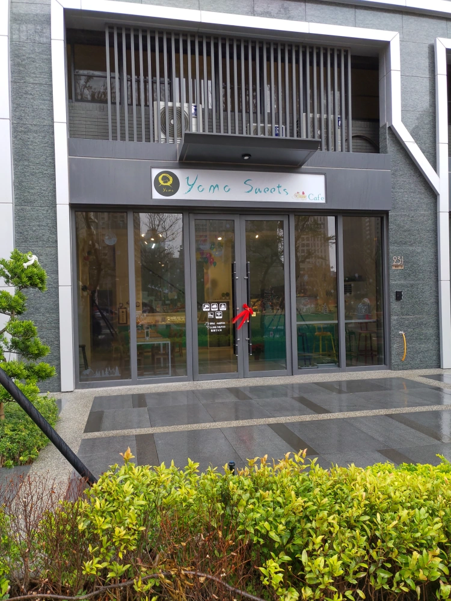
窗外目前還是綠地，景色不錯。 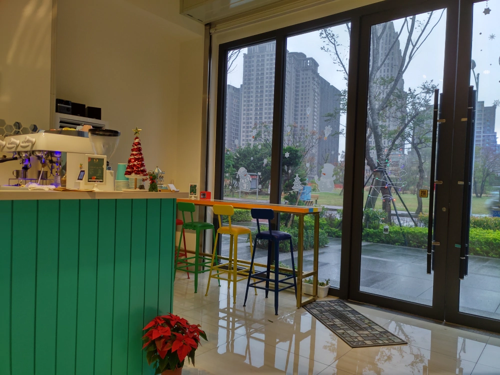
櫃台，有陳列一些精緻的蛋糕。 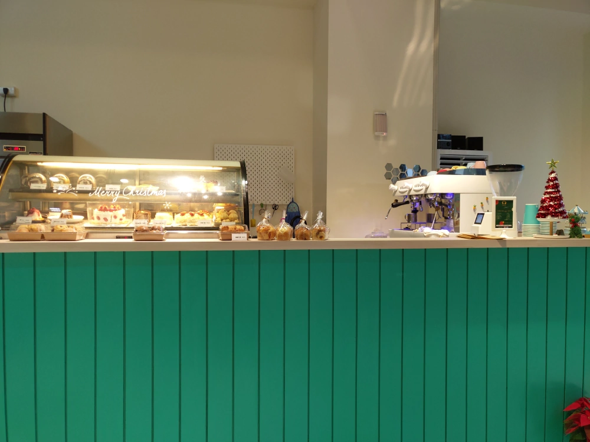
房子後方就是烘焙房了，前方則是咖啡店的部分。 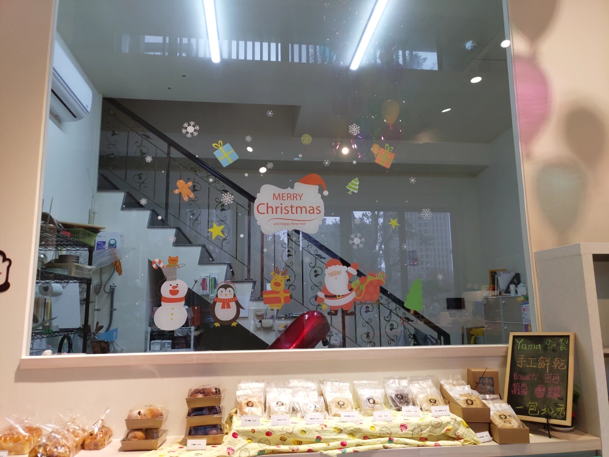
不曉得是不是太早了，只有老闆娘一位忙來忙去，食物部分鹹食非常少，只有菜單裡面的輕食是鹹的， 其他都是甜甜的蛋糕、麵包。 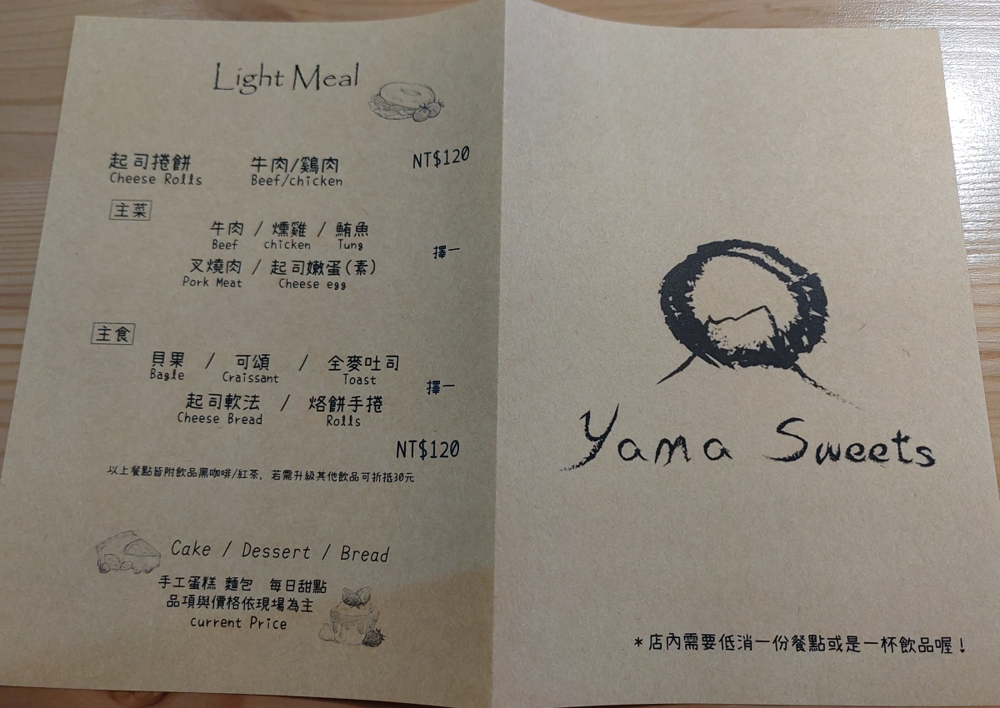 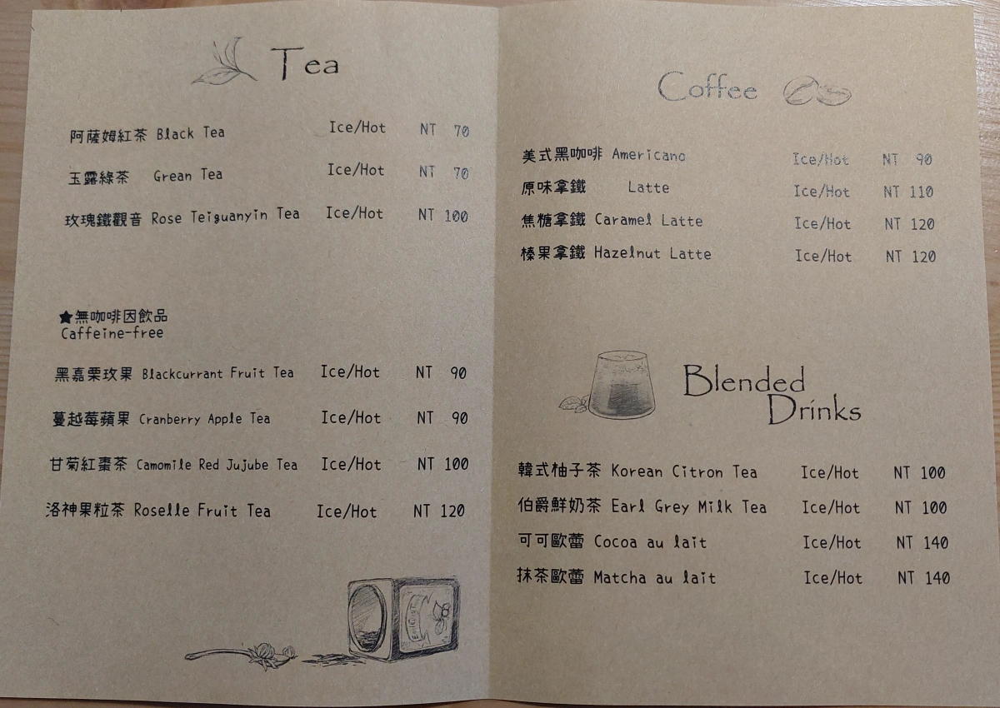 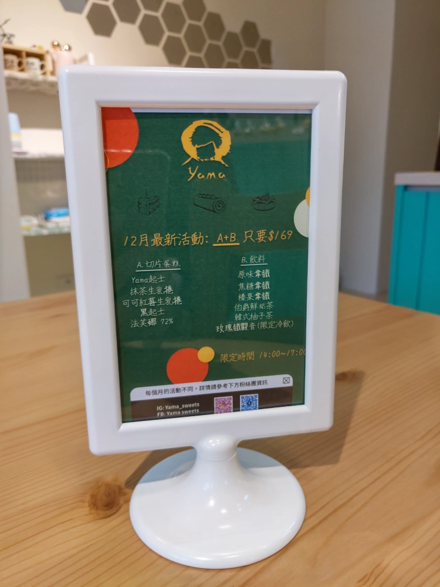
今天飲料選了 熱紅茶，榛果拿鐵，抹茶歐雷。味道很正常。除了紅茶不甜的情況下不好喝，跟老闆娘要了糖包材改善。
燻雞手卷，味道還不錯。 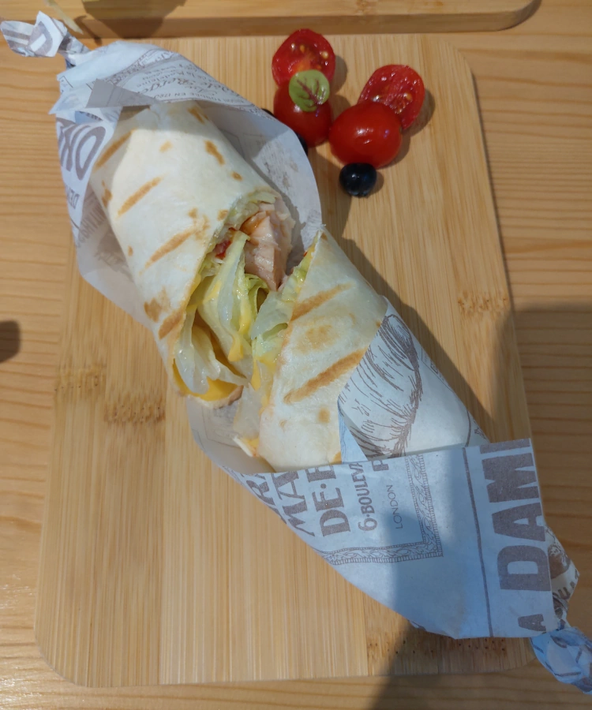
叉燒可頌，這裡的叉燒不是廣式叉燒，比較像火腿，味道也蠻正常的。 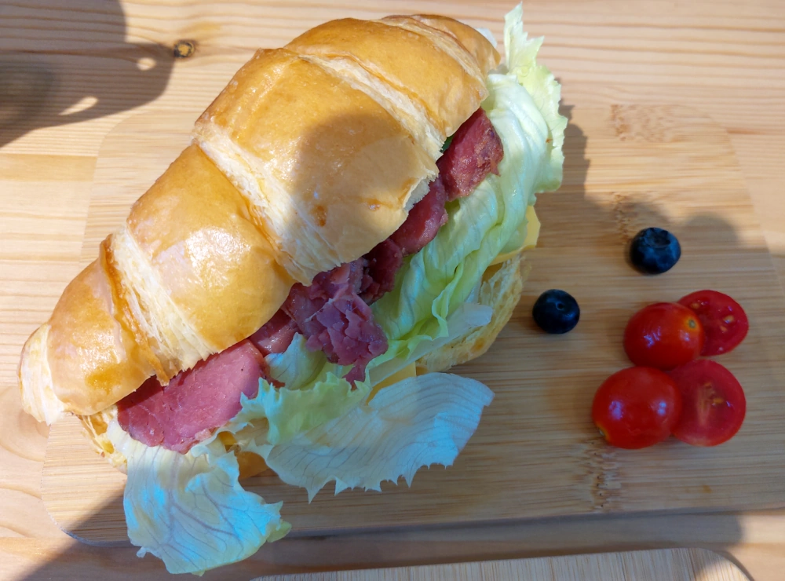
牛肉起士捲餅，味道還不錯。 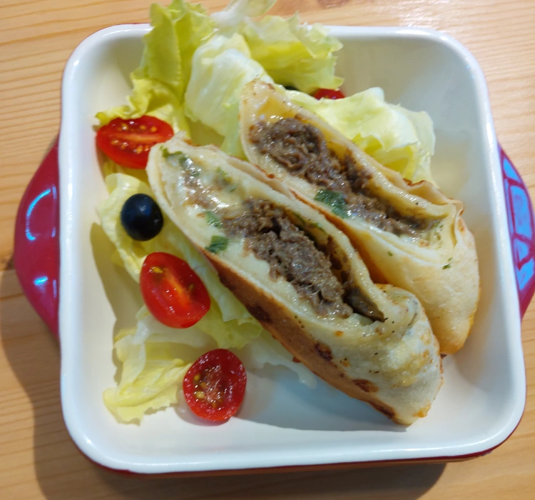
想說它是烘焙房，在玻璃櫃那邊選了一個 Yama千層，但吃起來略不習慣它的奶油，也許選別的會更好。 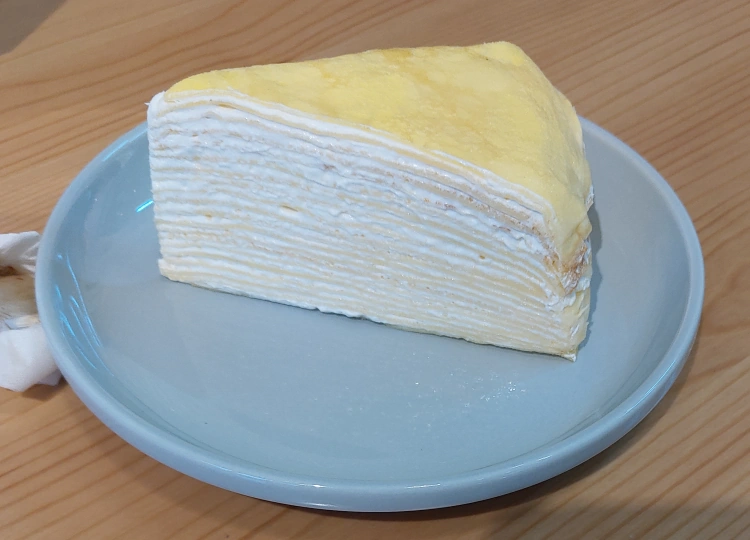
帳單如下，假日早餐想要悠閒悠閒地吃些好一點的，好像就是這樣的代價。 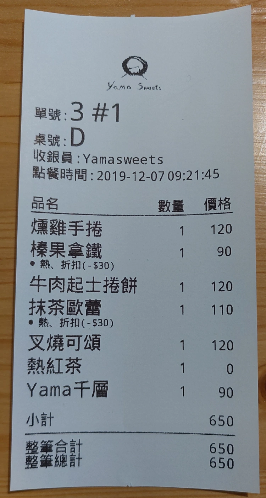
這家店 鹹食還算優秀，飲料普通，烘焙房的部分應該有一些好吃的甜食， 各位讀者就參考看看吧。